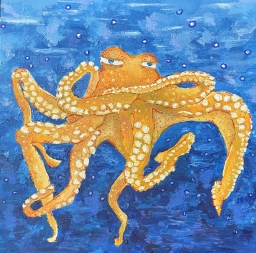

2D Approaches covers mediums from watercolor to screenprinting. These selections showcase my interest in color and especially texture. The first work, my final project dedicated to my hometown, is a mixed media piece with collage, acrylic, and embroidery. Click the image to see a full size version and see if you can spot the embroidered details!